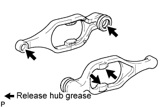
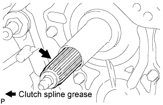

CLUTCH UNIT (for 1GR-FE) > INSTALLATION |
| 1. INSTALL CLUTCH DISC ASSEMBLY |
 |
Insert SST into the clutch disc, then insert the clutch disc into the flywheel.
| 2. INSTALL CLUTCH COVER ASSEMBLY |
 |
Align the matchmark on the clutch cover with the one on the flywheel.
In the order shown in the illustration, temporarily install the 6 bolts starting from the bolt located near the knock pin on the top.
Check that the disc is in the center by lightly moving SST up and down, and left and right.
Evenly tighten the bolts by following the order shown in the illustration.
| 3. INSPECT AND ADJUST CLUTCH COVER ASSEMBLY |
 |
Using a dial indicator with a roller instrument, check the diaphragm spring tip alignment.
 |
If the alignment is not as specified, adjust the diaphragm spring tip alignment using SST.
| 4. INSTALL CLUTCH RELEASE FORK SUB-ASSEMBLY |
 |
Apply release hub grease to the release fork, release bearing, push rod contact point and pivot points shown in the illustration.
 |
Apply clutch spline grease to the input shaft spline.
 |
Install the release bearing to the clutch release fork with the clip.
 |
Install the release fork support to the transmission unit.
Install the clutch release fork with the clutch release bearing to the transmission unit.
| 5. INSTALL MANUAL TRANSMISSION ASSEMBLY |
Install the manual transmission (Click here).